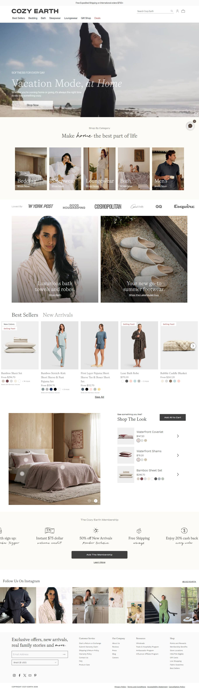
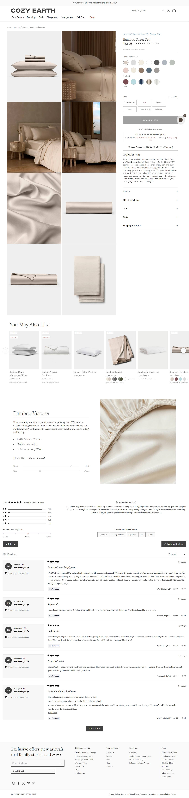
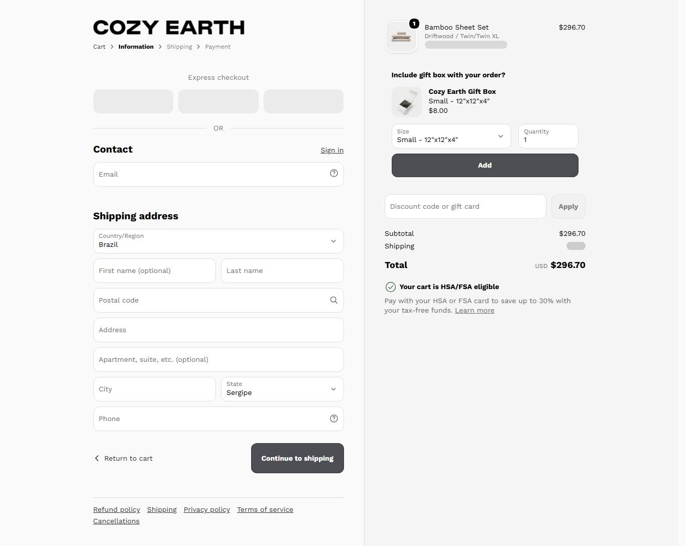

Marca consolidada de bambu. Catalogo dominado por loungewear masculino e roupa de cama; sleepwear feminino e uma linha, nao o negocio. Serve pra ler o angulo, nao pra copiar a operacao.
Produto campeao/recente: catalogo. Ticket medido via products.json (mediana = preco do meio, nao AOV real).
Medido na Meta Ad Library em 22/07/2026 (contagem global por pagina via page_ids + estimated_total_count).
Momentum da operação: estavel: gigante consolidado, 762 ativos, base US real. Tranco piorou levemente (75k->100k) mas segue dominante na categoria (rank #61).
Amostra de 50 anúncios (ordenada por recência) na Ad Library. Ritmo, duplicação e o que está sobrevivendo há mais tempo.
| Anúncios por dia | ~48 (rajada) |
| Criativos únicos por semana | ~100 |
| Fator de duplicação | 3,3x |
Base: marca com producao propria: estatico lifestyle + video de marca + catalogo.
producao pesada (nivel 3 alto): video de marca, foto de estudio. Barreira de producao alta pra competir de igual.
Ordenados por longevidade (dias no ar) e duplicação. O criativo mais antigo ainda ativo é o vencedor mais provável.
| Criativo campeão (headline real) | No ar | Por que funciona · link |
|---|---|---|
| "Pajamas Worth Staying In For" | 1d | Conforto como razao de ficar em casa. Estetica premium de marca ver anúncio ↗ |
| "Made to Feel Better" | 1d | O mais duplicado da rajada. Beneficio emocional amplo de marca consolidada ver anúncio ↗ |
| "Because Hot Flashes Don't Keep a Schedule 🤍" | 1d | SINAL: a marca gigante de bambu tambem entrou no angulo menopausa. Reforca que o territorio esta esquentando ver anúncio ↗ |
| "Premium Men's Sleepwear" | 1d | Metade do catalogo e masculino: prova que sleepwear feminino NAO e o negocio principal da Cozy Earth ver anúncio ↗ |
Tráfego medido (SimilarWeb). Benchmark e faturamento aplicados do IRP Commerce Fashion, Clothing & Accessories (jun/2026).
Não descrever, decodificar. O que faz o campeão desta loja ganhar, para o mentorado copiar.
| Big idea / ângulo | A marca do material: bambu viscose premium, macio e termorregulador, elevado a construcao de marca. |
| Mecanismo único | Bambu viscose como fibra-heroi: 'so soft', 'temperature-regulating'. O material E a marca. |
| Formato de hook | Beneficio de conforto/maciez ('so soft, so plush') e, agora, condicao (hot flashes). |
| Estrutura do presell | Marca consolidada: PR, reviews, catalogo largo (roupa de cama, masculino, feminino). Nao depende de advertorial de dropship. |
| Objeção principal | 'Vale o preco premium?' respondida com autoridade de marca e prova social acumulada. |
Modele esta home e esta PDP: veja a estrutura real do concorrente e o que copiar.
Modele esta home: cozyearth.com ↗ — copie a sequência de blocos, a prova social e a oferta acima da dobra.



Marca (estoque, PR, fulfillment proprio): NAO e molde replicavel. Aprende-se o angulo (material, cooling), nunca a operacao. Sleepwear feminino nem e o negocio principal (metade do catalogo e masculino/cama).
MARCA. fotografia propria de estudio, PR/imprensa, catalogo largo com roupa de cama e masculino, fulfillment proprio, anos de operacao consistente. Estoque e autoridade = nao replicavel.
CONSTRUÍVEL. 55% trafego nao-pago, marca consolidada, recompra, catalogo profundo. Fosso real, mas e o fosso DELES: nao se copia a operacao.